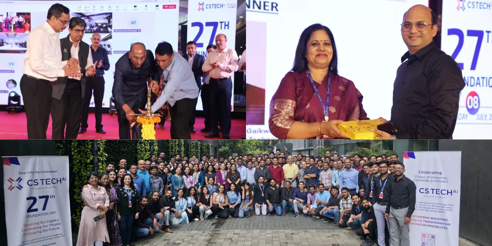

Celebrating 27 years of delivering technology-led impact across geospatial, mobility and emerging tech.
At a time when infrastructure is being redefined by data, automation, and intelligence, CS TECH Ai (BSE: Ceinsys) stands at the convergence of engineering depth and digital foresight. Building on 27 years of operational expertise, CS TECH Ai is scaling its impact as a data-driven technology leader.
Over two decades, the company has played a pivotal role in national infrastructure programs - creating real, measurable impact in the lives of millions of citizens. From water networks and transport corridors to energy and urban infrastructure, CS TECH Ai’s solutions have helped governments and enterprises deliver faster, smarter, and more equitable services.
Today, CS TECH Ai delivers integrated solutions across geospatial intelligence, mobility engineering, digital twins, and AI-powered platforms – operating in critical sectors like water, energy, transportation, urban planning, and mobility, where digital infrastructure is central to national and sectoral competitiveness.
Going forward, CS TECH Ai is moving beyond utilizing data, leveraging digital platforms to delivering real-time, decision-grade intelligence. This journey – from raw data to domain-specific solutions, and now to intelligence-led planning and decision-making – defines the company’s value proposition, positioning it as a strategic enabler of intelligent infrastructure systems that are adaptive, insight-driven, and built for long-term impact.
CS TECH Ai as on date: Engineering Impact. Scaling Insight.
CS TECH Ai’s role has been to engineer infrastructure systems that deliver measurable policy and citizen outcomes. From designing over 35,000 miles of water networks under programs like the Jal Jeevan Mission to processing 650,000 miles of high-resolution imagery for business intelligence and infrastructure planning, the company brings deep capability to national missions.
Its solutions have analysed over 2.2 million square feet of infrastructure, processed more than 100,000 miles of electrical networks, and contributed over 7 million hours to mobility and manufacturing programs. These initiatives have enabled – and continue to enable – smart planning, faster rollout, and greater transparency across large-scale programs such as the Jal Jeevan Mission, AMRUT, Smart Cities development, etc.
The company has been able to deliver these solutions with over 1,250 engineers and technologists across India, the US, UK, and Germany.
With recent acquisitions, CS TECH Ai now operates on a global delivery model with local relevance. These acquisitions include AllyGrow Technologies, a pure-play mobility – product and manufacturing engineering services company and VTS – a US-based 3D data acquisition and digital reconstruction company.
The Road Ahead: Intelligence at Scale
As infrastructure demands evolve toward automation, resilience, and sustainability, CS TECH Ai is focused on deepening its platform capabilities, particularly in areas like digital twins that support real-time infrastructure visibility. AI is being increasingly embedded into sector-specific workflows – across utilities, mobility, and urban planning – to enhance decision-making at speed and scale. To support its growing footprint, the organization is also strengthening its global delivery model through distributed teams and cross-border partnerships.
From geospatial assets to mobility systems, CS TECH Ai is building the digital backbone of systems that think, adapt, and deliver with intelligence.
At 27, CS TECH Ai is not just celebrating its legacy – it is defining a long-term vision for how systems are designed, delivered, and made smarter.